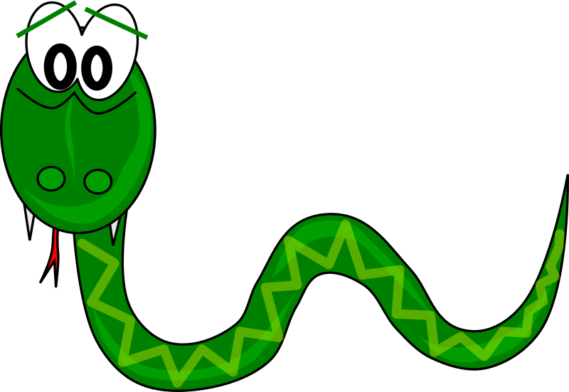

☰
SnakeGame
About The Game
SnakeGame is a version of snake game that was introduced in 1991 for Windows based personal computers.
The game was originally distributed with Microsoft entertainment pack and was available with the earlier versions of Windows operating system.
The game's strategy was to feed a snake that is very hungry with apples that are placed at various parts of the screen.
Compared to the original snake game, The SnakeGame featured many obstacles and the players must avoid these obstacles while playing the game.